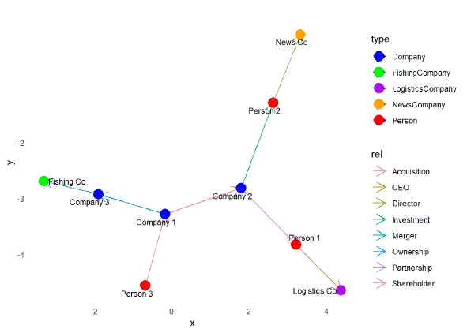

Proposal
1. Title
Visualization for Fish Companies’ Network and Inner Business after Illegally Fishing
2. Motivation
The commercial fishing industry in Oceanus is marked by dynamic changes, including new startups, mergers, and acquisitions. Recently, the illegal activities of SouthSeafood Express Corp have highlighted the need for robust tools to monitor and analyze these corporate structures. FishEye International, dedicated to preserving the marine ecosystem, requires advanced visualization tools to identify key influencers, detect suspicious activities, and understand the broader market impacts of such illegal actions.
Our project aims to develop a web-enabled visual analytics shiny app to help FishEye analysts visualize and understand temporal changes in corporate structures and business transactions. By providing clear visual representations of corporate networks and business transactions, the application will enable analysts to identify potential red flags, examine typical and atypical transactions, and understand how corporate influence and ownership evolve over time. This will support FishEye’s mission to prevent illegal fishing and ensure the sustainability of Oceanus’s marine ecosystem.
3. Tasks and Questions
This is based on the tasks and questions from VAST Challenge 2024 Mini Challenge 3.
A key element in stopping illegal fishing is holding the people who own nefarious companies accountable. Thus, FishEye is keenly interested in developing visualization tools that work with CatchNet to identify the people who hold influence over business networks. That is especially difficult with varied and changing shareholder and ownership relationships.
FishEye analysts want to better visualize changes in corporate structures over time. Create a visual analytics approach that analysts can use to highlight temporal patterns and changes in corporate structures. Examine the most active people and businesses using visual analytics.
Using your visualizations, find and display examples of typical and atypical business transactions (e.g., mergers, acquisitions, etc.). Can you infer the motivations behind changes in their activity?
Develop a visual approach to examine inferences. Infer how the influence of a company changes through time. Can you infer ownership or influence that a network may have?
Identify the network associated with SouthSeafood Express Corp and visualize how this network and competing businesses change as a result of their illegal fishing behavior. Which companies benefited from South Seafood Express Corp legal troubles? Are there other suspicious transactions that may be related to illegal fishing? Provide visual evidence for your conclusions.
4. Methodology
The initial approach involves identifying abnormalities in the data, followed by necessary data wrangling and cleaning. We will conduct initial data exploration and analysis to understand the dataset better. Once this is complete, we will proceed to address each task individually.
Task 1: Visualize Changes in Corporate Structures Over Time
Initially, data preparation involves cleaning and formatting date fields and entity identifiers. Identifying the most active entities is achieved by aggregating transaction counts per source, focusing on the top entities for a more detailed analysis. Visualizations include time series plots to track transaction trends over time, heatmaps to highlight periods of high activity, bar charts to emphasize the most active nodes, and faceted plots to compare transaction counts across different entities over selected timeframes. These visualizations enable analysts to detect patterns and potential irregularities in the market, offering a clear view of dynamic changes and helping guide strategic decisions.
Task 2: Analyze Business Transactions

To analyze and visualize business relationships and transaction patterns effectively, the methodology employed combines data structuring, network visualization, and interactive exploration. Using igraph and ggraph, a directed graph is created to display entities and their relationships, where nodes represent entities such as companies and individuals, and edges represent transactions or roles like mergers and acquisitions, color-coded for distinction. This is augmented by visNetwork for an interactive visualization that enables dynamic exploration of the network, highlighting connections and facilitating the identification of key influencers and transaction flows. Additionally, a heatmap created with ggplot2 visualizes transaction frequency over time, helping to spot trends and anomalies.
Task 3: Examine Influence Dynamics
Test the centrality to see how the company is built based on the weight point;
Since we require a dynamics influence, a visNetwork with time control will be easy to handle dynamics.
Task 4: Identify Network Changes Related to SouthSeafood Express Corp
We want to use a timeline to see how the SounthSeafood Express Corp in different groups affect or affected by other company (not unit.person);